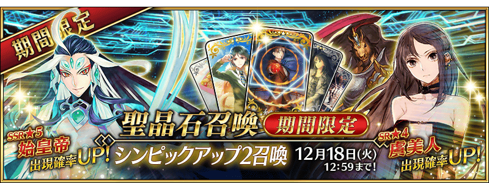
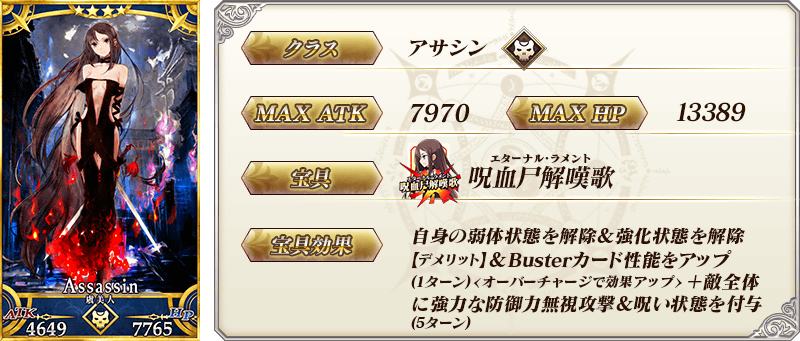
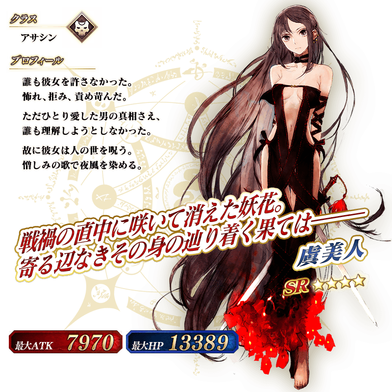

◆「SIN Pick Up2召喚」期間◆
期間:2018年12月4日(二) 17:00～12月18日(二) 11:59
舉辦期間限定「SIN Pick Up2召喚」！
※未通過第2部 第3章「Lostbelt No.3 人智統合真國 SIN 紅之月下美人」的狀態也能進行「SIN Pick Up2召喚」。
自在第2部 第3章「Lostbelt No.3 人智統合真國 SIN 紅之月下美人」登場的Servant「★5(SSR)始皇帝」以期間限定登場！
並且「★4(SR)虞美人」「★3(R)赤兔馬」Pick Up！
詳情請在聖晶石召喚畫面左下的召喚詳細確認。
◆有關Servant的注意◆
※始皇帝在Pick Up期間結束後不會追加到故事召喚。
※虞美人、赤兔馬是自12月4日(二) 17:00，在Lostbelt No.3通過後追加到故事召喚的Servant。
※Pick Up期間中，虞美人、赤兔馬就算通過Lostbelt No.3前也能入手。
※虞美人、赤兔馬在Pick Up期間結束後仍會在故事召喚被抽出。
Pick Up期間中，期間限定Servant、新登場Servant的出現機率提升！
10次召喚中確定1張★4(SR)以上和確定1位★3(R)以上的Servant！
※確定★4(SR)以上包含Servant和概念禮裝。



※上述「★4(SR)虞美人」的卡面為靈基再臨第2階段。


※上述「★3(R)赤兔馬」的卡面為靈基再臨第2階段。


※上述「★4(SR)虞美人」的立繪為靈基再臨第2階段。

※上述「★3(R)赤兔馬」的立繪為靈基再臨第2階段。
介紹虞美人、赤兔馬的寶具演出！
在「Fate/Grand Order」官方網站內的公告中，公開了「★4(SR)虞美人」「★3(R)赤兔馬」的寶具演出。敬請確認。
關於期間限定「SIN Pick Up召喚(每日交替)」的詳情請自下述橫幅確認。